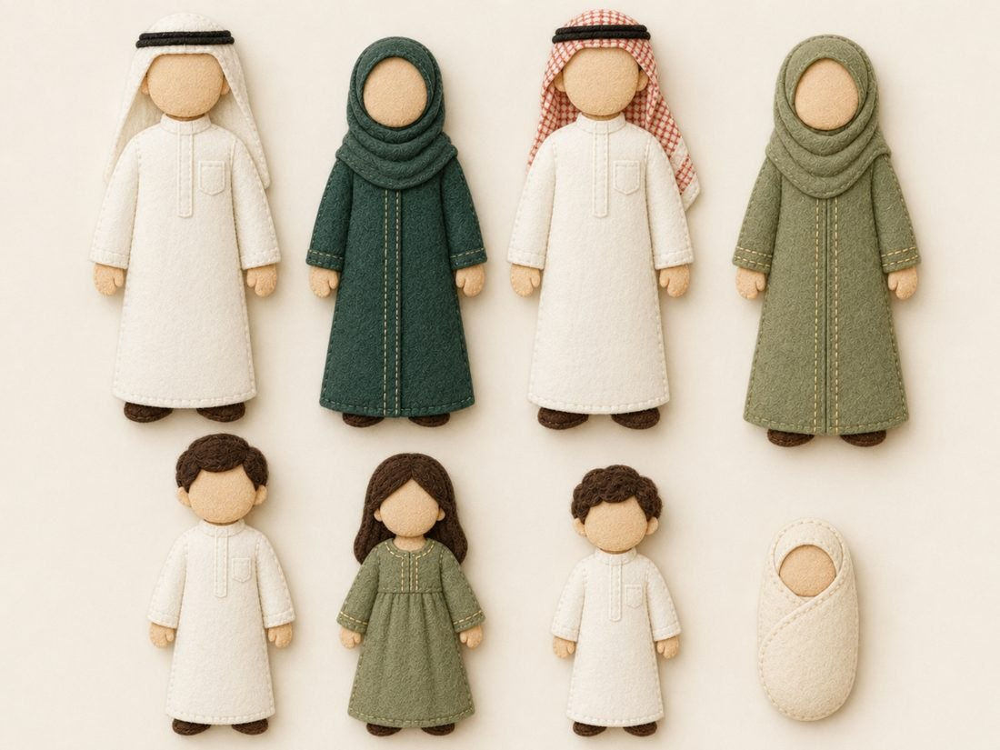

ثماني دمى من الجوخ تمثّل ثلاثة أجيال · وحدة العائلة · تمهيدي ٥–٦ سنوات

اللوحة المرجعية: ثماني دمى مسطّحة من الجوخ تمثّل أفراد الأسرة عبر ثلاثة أجيال
بطاقة اللوحة
الاسم
دمى أفراد الأسرة — ثماني قطع مسطّحة من الجوخ
الوحدة المرتبطة
وحدة العائلة · تمهيدي (٥–٦ سنوات)
ما تعرضه اللوحة
أفراد الأسرة في ثلاثة أجيال، متمايزين بالحجم والغطاء والشعر
عدد القطع
٨ دمى: الجدّ · الجدّة · الأب · الأم · الابن الكبير · الابنة · الابن الصغير · الرضيع
المقاس المقترح
الكبار ٢٤ سم · الأبناء ١٥–١٧ سم · الرضيع ٩ سم
زمن التنفيذ
٧ – ٩ ساعات على ثلاث جلسات
مستوى الصعوبة
متوسّط إلى متقدّم — الدقّة مطلوبة في الأغطية والشعر
الاستعمال
تُستعمل على لوحة وبريّة أو أمام لوحة المساكن أو في يد الطفل مباشرة
قبل أن تبدئي — سبع قواعد ثابتة في شغل الجوخ
نوع الجوخ: جوخ بوليستر (رخيص، يُبَرْبَر مع الاستعمال) وجوخ صوفيّ أو مخلوط (أغلى، لكن حوافّه أنظف ولونه ثابت). للّوحات التي تُستعمل كلّ يوم اختاري المخلوط بسماكة ٢ مم للأجسام و١ مم للتفاصيل الصغيرة.
القصّ يصنع نصف الجودة: استعملي مقصًّا صغيرًا مدبَّبًا مخصَّصًا للقماش، واقصّي كلّ حافّة متّصلة بحركة واحدة لا بقصّات متقطّعة.
من الخلف إلى الأمام: رتّبي الطبقات دائمًا — الخلفيّة، ثمّ الكتل الكبيرة، ثمّ التفاصيل الصغيرة، ثمّ القطع البارزة.
الخياطة لا الغراء: الغراء الحراريّ يُذيب ليف الجوخ الرقيق ويترك أثرًا لامعًا ينفصل بعد أسابيع. استعملي الغراء للتثبيت المؤقّت فقط، والخياطة هي الأساس.
الخيط: خيط تطريز قطنيّ (DMC أو ما يماثله) بستّ فتائل يُفصَل إلى فتيلتين للغرز الدقيقة، وثلاث للحواف. طول الخيط لا يتجاوز ٥٠ سم حتى لا يتشابك.
التجربة الجافّة: رتّبي كلّ القطع المقصوصة على الخلفيّة وصوّريها بجوّالك قبل أن تخيطي غرزة واحدة.
اختبار المسافة: علّقي اللوحة وابتعدي ثلاثة أمتار — وهي مسافة آخر طفل في الحلقة. ما لا يُرى من هناك يحتاج لونًا أقوى أو حجمًا أكبر.
أوّلًا: الخامات والأدوات
الخامات
الخامة
المواصفة
الكميّة
ملاحظة
جوخ بلون البشرة
٢ مم — الوجه واليدان
نصف فرخ
درجة واحدة لجميع الدمى منعًا لأيّ مقارنة
جوخ أبيض عاجيّ
٢ مم — الثوب والغترة
فرخ ونصف
الأبيض الناصع يتّسخ سريعًا؛ فضّلي العاجيّ
جوخ أخضر داكن
٢ مم — عباءة الجدّة
نصف فرخ
—
جوخ أخضر زيتونيّ
٢ مم — عباءة الأم وفستان الابنة
نصف فرخ
—
جوخ أحمر (الشماغ)
للشماغ
قطعة ٢٠×٢٠
يُصنع بالتطريز أو بقصّ قماش شماغ وتثبيته على جوخ
خيط صوف بنّي
الشعر
بكرة صغيرة
بنّي غامق ومتوسّط لتنويع بسيط
خيط أسود سميك
العقال
نصف متر
يُجدل ثلاث فتائل ويُخاط لا يُلصق
حشو بوليستر
خفيف
كفّان
للبروز الخفيف فقط
فيلكرو أو مغناطيس رقيق
خلف كلّ دمية
٨ قطع
المغناطيس أنسب للسبّورة المعدنيّة
خيط تطريز قطنيّ
عاجيّ · ذهبيّ · بنّي · أخضر · أسود
بكرة لكلّ لون
—
الأدوات
الأدوات كما في أيّ لوحة جوخ: مقصّ مدبَّب · إبرة تطريز رقم ٧ و٩ (الرفيعة للوجه) · قلم يختفي · مشابك · مسطرة · ورق باترون.
ثانيًا: لوحة الألوان
لون البشرة
#E8C49A
عاجيّ — الثياب
#F4F0E4
أخضر داكن — عباءة
#25453A
زيتونيّ — عباءة وفستان
#7E8A5A
أحمر الشماغ
#B75B49
بنّي الشعر
#3A2A1E
ذهبيّ التطريز
#C9A227
أسود العقال
#1A1A1A
عاجيّ — خلفية العرض
#F2ECE0
قاعدة اللون: لون بشرة واحد لجميع الدمى، وثوب واحد للرجال، وعباءتان مختلفتان للنساء. التنوّع يكون في الحجم والغطاء والشعر لا في اللون، حتى يقرأ الطفل الفروق بين الأجيال بسهولة.
ثالثًا: خطوات التصميم ورسم الباترون
قاعدة النسب: الرأس دائرة قطرها خُمس الطول الكلّي. الدمية ٢٤ سم رأسها ٤٫٨ سم، والدمية ١٦ سم رأسها ٣٫٢ سم. هذه النسبة تعطي الشكل الطفوليّ المحبَّب.
الجسم قطعة واحدة على شكل جرس: عرض الكتفين ٧ سم يتّسع تدريجيًّا إلى ١١ سم عند الذيل، والأكمام تُقصّ مع الجسم لا منفصلة — هذا يوفّر الوقت ويمنع فكّ الأكتاف.
ارسمي باترونًا واحدًا للكبار ثمّ صغّريه إلى ٧٠٪ للأبناء و٦٥٪ للابن الصغير. الرضيع شكل بيضويّ مستقلّ ٩ × ٥٫٥ سم.
الأغطية باترونات مستقلّة: الغترة مثلّث قائم ضلعه ١٢ سم يُطوى نصفين · الحجاب قطعتان (قطعة رأس هلاليّة وقطعة كتف) · العباءة قطعة أماميّة تُركّب فوق الجسم.
الوجه بلا ملامح: كلّ الدمى وجوهها خاليةٌ من العينين والأنف والفم كما في اللوحة المرجعيّة — وهو الأسهل تنفيذًا والأثبت نتيجةً بين الدمى الثماني، وهو الموافق لضابط المنهج في صيانة تصوير ذوات الأرواح.
التجربة الجافّة: رتّبي الدمى الثماني بالترتيب (جدّ · جدّة · أب · أم · أبناء · رضيع) قبل الخياطة وتأكّدي من تدرّج الأطوال بصريًّا.
ضابط عقديّ: وجوه الدمى تبقى خاليةً من الملامح في المنهج كلّه؛ لا تُرسَم عينان ولا فمٌ ولا أنف، صيانةً لتصوير ذوات الأرواح. والوجه الخالي أنظفُ هيئةً وأيسرُ على الطفل في التقمّص والحكاية.
رابعًا: خطوات التنفيذ
اقصّي لكلّ دمية قطعتَي جسم متطابقتين (أماميّة وخلفيّة) من لون الثوب، وقطعتَي رأس من لون البشرة.
الرأس: ثبّتي دائرة الوجه على القطعة الأماميّة بحيث تدخل ١ سم تحت خطّ الرقبة، وخيّطي بالغرزة الخفيّة. ويبقى الوجه خاليًا من الملامح.
الثوب: خطّ فتحة الصدر بالغرزة الخلفيّة، وجيب صغير ١٫٢ × ١٫٥ سم يُخاط من ثلاث جهات — تفصيل صغير يعطي واقعيّة عالية.
العباءة: قطعة أماميّة بخطّ فتح في المنتصف، وتُطرَّز حافّتاه بالغرزة الأماميّة بخيط ذهبيّ بغرز طولها ٣ مم متساوية.
الغترة والشماغ: اطوِ المثلّث وثبّتيه على الرأس بحيث يغطّي الجبهة قليلًا وينسدل على الكتفين، وخيّطي من أعلى الرأس فقط ليبقى الطرفان حرَّين.
العقال: اجدلي ثلاث فتائل من الخيط الأسود السميك بطول ١٦ سم، لُفّيها حلقتين فوق الغترة، وثبّتيها بغرز خفيّة في ستّ نقاط — لا تُلصق أبدًا، فهي أوّل ما ينزعه الطفل.
الحجاب: ثبّتي قطعة الرأس أوّلًا ثمّ قطعة الكتف فوقها، واجعلي حدّ الوجه منحنيًا لا مستقيمًا.
الشعر (للأبناء): لُفّي خيط الصوف حول بطاقة عرضها ٤ سم، اقصّي طرفًا واحدًا، ثمّ ثبّتي الخصلات على خطّ فرق الشعر بغرزة أماميّة؛ للولد خصلات قصيرة بغرز حلزونيّة صغيرة، وللبنت خصلتان طويلتان.
القدمان: شكلان صغيران بنّيان يُدسّان تحت طرف الثوب ويُخاطان معه في الخياطة النهائيّة.
الإغلاق: ضعي القطعة الخلفيّة، وخيّطي المحيط كلّه بغرزة اللحاف بخيط بلون الثوب، واتركي فتحة ٣ سم عند الجانب.
الحشو: أدخلي طبقة خفيفة جدًّا بطرف قلم غير حادّ، ثمّ أغلقي الفتحة. الدمية تبقى مسطّحة لتقف على اللوحة الوبريّة.
الخلف: ثبّتي قطعة فيلكرو ٢ × ٤ سم عموديًّا في منتصف الظهر — الوضع العموديّ يمنع الميلان.
خامسًا: الغرز المستعملة
الغرزة
موضعها
ملاحظة تنفيذيّة
غرزة اللحاف
محيط كلّ دمية
٣ مم بين الغرزة والأخرى — أدقّ من لوحات المباني لأنّ القطعة صغيرة
الغرزة الخفيّة
تثبيت الوجه والأغطية
الخيط بلون القطعة العليا حتى يختفي
الغرزة الخلفيّة
فتحة الصدر وخطوط الثوب
خيط بفتيلتين فقط
الغرزة الأماميّة
تطريز حافّة العباءة الذهبيّ
الانتظام هنا هو ما يعطي الأناقة
الغرزة الحلزونيّة
شعر الأولاد
دوائر صغيرة متلاصقة من خيط الصوف
سادسًا: أخطاء شائعة وكيف تتجنّبينها
الخطأ
أثره
العلاج
لصق العقال أو الأغطية
تنزع خلال أسبوع من الاستعمال
خياطة بستّ غرز خفيّة على الأقلّ
رأس صغير على جسم كبير
الدمية تبدو كبالغ لا كشخصيّة طفوليّة
التزمي نسبة الخُمس
أطوال متقاربة للأجيال
الطفل لا يفرّق الجدّ من الأب ولا الابن من الابنة
فرق ٧ سم على الأقلّ بين مجموعة الكبار ومجموعة الأبناء
رسم ملامح دقيقة للوجه
مخالفة الضابط، وصعوبة التنفيذ وتفاوت النتائج بين الدمى
الوجوه الخالية من الملامح أنظفُ هيئةً وأثبتُ نتيجةً
الإفراط في الحشو
لا تثبت على اللوحة الوبريّة وتميل
حشو خفيف جدًّا، والهدف لا حجمٌ مجسّم
ألوان بشرة متعدّدة
تشتّت العين وتكسر وحدة المجموعة
لون واحد لجميع الدمى
سلامة: كلّ قطعة صغيرة (العقال · القدمان · الخصلات) تُخاط لا تُلصق، ولا تُستعمل أزرار أو خرز حقيقيّة تنفصل — تُستبدل بغرز مطرّزة؛ فالدمى تصل إلى يد الطفل مباشرة.
سابعًا: تجهيز الدمى للدرس
قبل اللقاء بيوم
أخرجي الدمى الثماني وقارنيها ببطاقة الصورة داخل الكيس للتأكّد من اكتمالها.
افحصي غرز العقال والغترة والحجاب — هي أوّل ما يُفكّ — وأصلحيها قبل اللقاء لا بعده.
سرّحي الشعر الصوفيّ بمشط ناعم مع قصّ الأطراف الشاردة.
أزيلي الوبر عن الثياب العاجيّة بشريط لاصق؛ العاجيّ يُظهر الغبار أكثر من غيره.
جرّبي ثبات كلّ دمية على اللوحة الوبريّة أو السبّورة؛ الدمية التي تميل تحتاج قطعة فيلكرو أطول أو أعلى قليلًا.
ترتيب العرض
رتّبي الدمى قبل دخول الأطفال في الترتيب الذي تُثبّتينها به: الجدّ · الجدّة · الأب · الأم · الابن الكبير · الابنة · الابن الصغير · الرضيع.
احفظيهم مقلوبة أو داخل كيس حتى لحظة العرض؛ ظهورهم مبكّرًا يستهلك أثر المفاجأة.
اللوحة عند مستوى نظر الطفل الجالس (نحو ١٠٠ سم عن الأرض).
اتركي مسافة ٣ سم على الأقلّ بين دمية وأخرى؛ التلاصق يخفي الأحجام التي بُنيت عليها المجموعة.
إن كنتِ تستعملينها أمام لوحة المساكن، جرّبي التركيب مسبقًا وتأكّدي أنّ الفيلكرو يمسك على تلك الخلفيّة أيضًا.
أثناء الاستعمال ثمّ بعده
أمسكي الدمية من جسمها لا من الغطاء ولا من الشعر.
إن سلّمتِ دمية لطفل فبقاعدة: دمية واحدة في يد وتُعاد قبل أخذ غيرها.
بعد اللقاء مباشرة: عدّ الدمى الثماني · فحص العقال والأغطية · إعادتها مسطّحة إلى الكيس.
حقيبة اللوحة
كيس قماش واحد لكلّ مجموعة، وبداخله بطاقة صورة المجموعة.
الباترونات الثلاثة (الكبار · المصغّر · الرضيع) والأغطية.